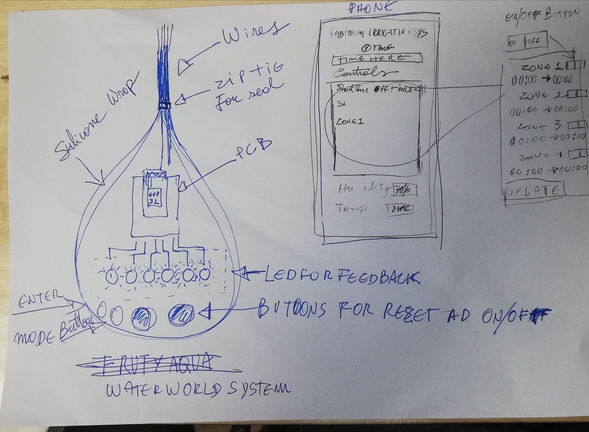
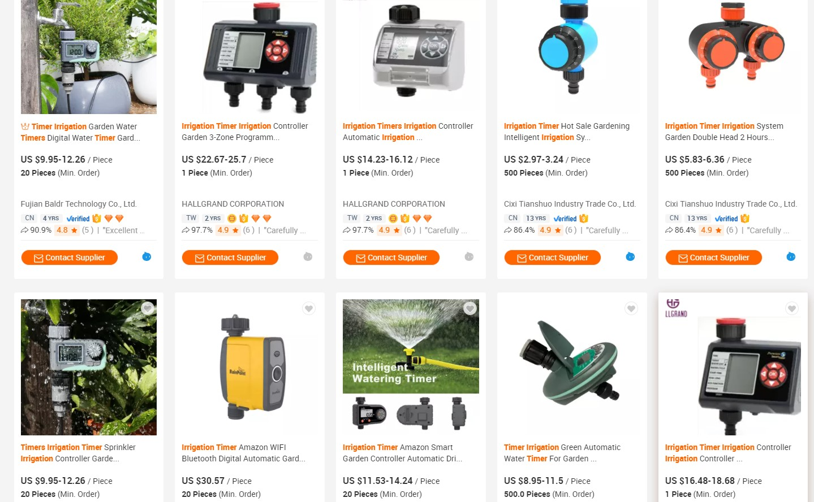

Aplications and Implications
Individual Project
- Propose a final project masterpiece that integrates the range of units covered. Your project should incorporate: 2D and 3D design, additive and subtractive fabrication processes, electronics design and production, microcontroller interfacing and programming, system integration and packaging
- Where possible, you should make rather than buy the parts of your project. Projects can be separate or joint, but need to show individual mastery of the skills, and be independently operable.
Learning outcomes:
- Define the scope of a project
- Develop a project plan
Have you answered these questions:
- what will it do?
- who has done what beforehand?
- what will you design?
- what materials and components will be used?
- where will they come from?
- how much will they cost?
- what parts and systems will be made?
- what processes will be used?
- what questions need to be answered?
- how will it be evaluated?
What will it do?
On the 6th of June, 2020 I decided to change my final project again!
Project diary update here
I needed to have irrigation working in the farm, I did not need more chicken right now, so well I changed again. It doesn't mean I gave up on the Chicken egg incubator. It only means I might have TWO final projects :-). Well maybe not, the reality is that I will focus on the irrigation, my fruit trees need the water, the greenhouse too. I have so much need for it right now and I need it to to work well that it makes it really worth the change.
So no Chickens! YES WATER!, maybe also Chickens.
To answer it clearly my final project will be an Irrigation sytem, it will alow me to schedule irrigation events by zone and time, it will also present humidity and temperature. The PCB will have extra pins for expantion. It will be enclosed on a water prof box.
I made a few sketches.

In this Sketch I show how the package shape is going to be and how the web interface is going to be as well.
Who has done what beforehand?
There are a number of companies that sell irrigation controller systems.
On Alibaba website we ca see many options with an almost infinite price range, as well as capabilities.

JOGIN FRANCIS made a really nice automatic valve for irrigation automation that could defenetelly add to my project but for now I will focus more on the interface and controller and use comertial valves.

João Milheiro also made an irrigation system. He is using it to control the enviroment of a mushroom growing kit.

What will you design?
I will design the pcb that will have on its center a ESP32 and relays for the activation of different solenoid valves, a pump and a sensor.
I will also design the water-prof enclosure as well as a gasket.
Finally I will design the web interface to allow connectivity and operation of the system.
What materials and components will be used?
Where will they come from?
How much will they cost?
To answer the questions above I made a spreadsheet.
| Materials and components | What for | Where they come from | Cost |
|---|---|---|---|
| water resistant MDF | for the enclosure | mdf leftover from the CNC users | 0 |
| bcb blank | for the system controler | fablab stock | 0 |
| silicone | for the gasket | fablab stock | 0 |
| epoxy resin | to further waterprof the interior of the enclosure and help with the light refraction of the LEDs | fablab stock | 0 |
| eletronic componets | to populate the pcb | fablab stock | 0 |
| Diode | to populate the pcb | fablab stock | 0 |
| PCB terminal block W237-102 | to populate the pcb | fablab stock | 0 |
| Capacitors | to populate the pcb | fablab stock | 0 |
| Resistors | to populate the pcb | fablab stock | 0 |
| Molex conectors | to populate the pcb | fablab stock | 0 |
| Current sensorv ACS712 | to populate the pcb | fablab stock | 0 |
| transistors | to populate the pcb | fablab stock | 0 |
| Crystal | to populate the pcb | fablab stock | 0 |
| Octocoupler EL817 | to populate the pcb | fablab stock | 0 |
| ESP-WROOM-32 | to populate the pcb | fablab stock | 0 |
| Headers | to populate the pcb | fablab stock | 0 |
| Swiches | to populate the pcb | fablab stock | 0 |
| LED | to populate the pcb | fablab stock | 0 |
| LEDFAB1206 | to populate the pcb | fablab stock | 0 |
| Voltage regulator MCP1700T-3302E/TT | to populate the pcb | fablab stock | 0 |
| TEMP-HUM-SENSOR-DHT11 | to populate the pcb | fablab stock | 0 |
What parts and systems will be made?
I will be making the enclosure the pcb as well as the gasket.
What processes will be used?
- PCB
- Electronics design, Designing the PCB in Eagle.
- Electronics Production, Mill PCB.
- Web interface, communication with c++ with Json, and the embebed program itself on C++
- Enclosure.
- 3D design, Designing the PCB enclosure itself.
- Milling/Production, Production of the PCB enclosure using the CNC
- Design and cast a gascket using wax for the mold and silicone for the gasket
What questions need to be answered?
How to make a webinterface that comunicates smothlly with the c++? maybe Json protocol?
How to set time and keep it from losing it with a power loss
How will it be evaluated?
The irrigation system will have to be asy to use and install and it will need to be equally cheap to produce and customize.